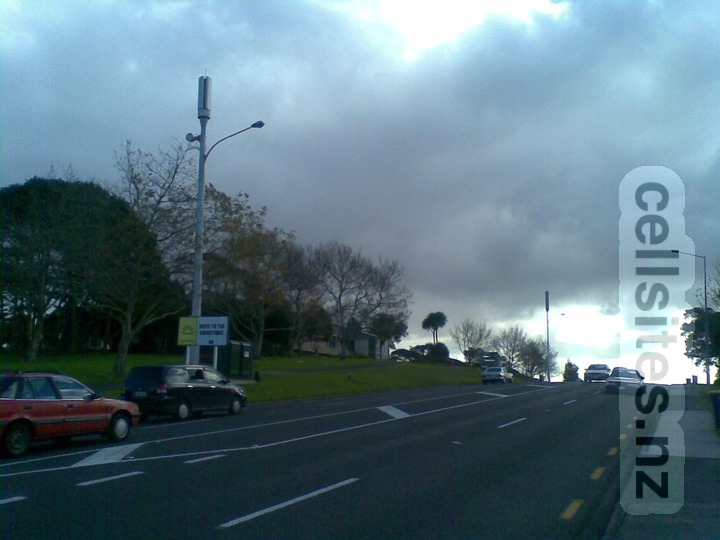
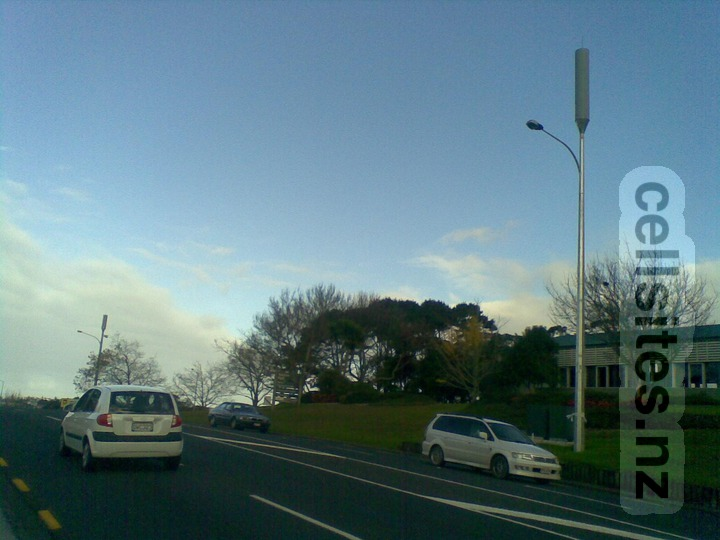

Henderson-Massey Local Board
Cell Sites in Aotearoa
Tāmaki-makau-rau
2degrees Glendene South
Vodafone Waikumete Cemetery
2degrees Glendene South
ID:
AKL-006-032
Code:
GLDS
GIS Geek

Vodafone Waikumete Cemetery
GIS Geek
